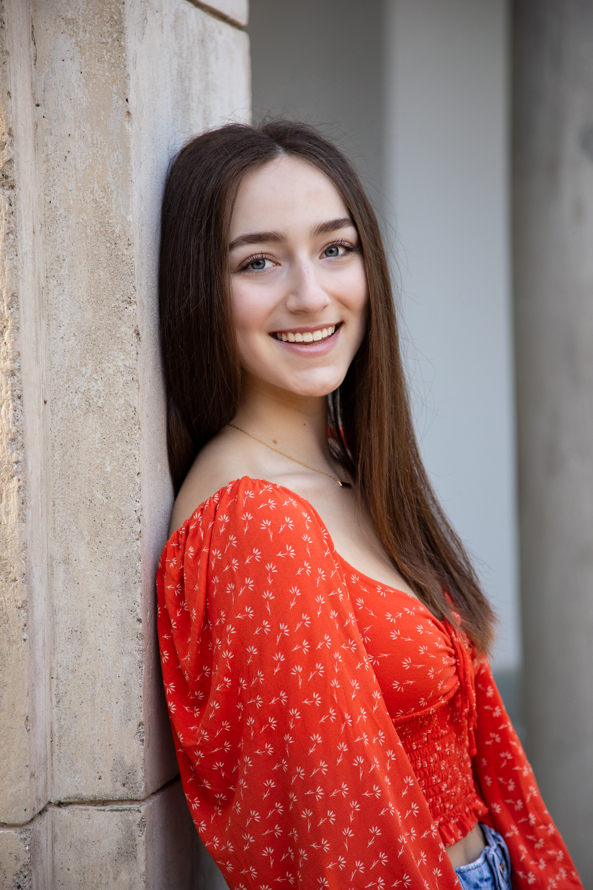
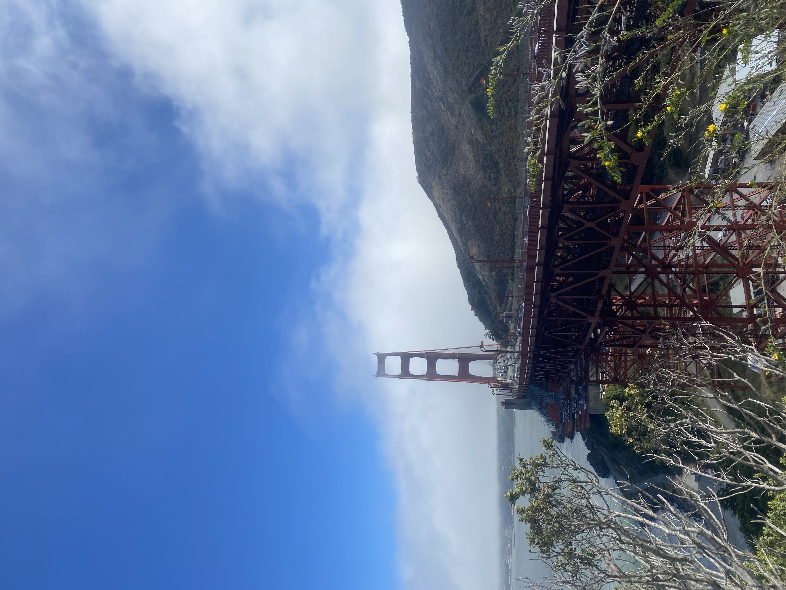
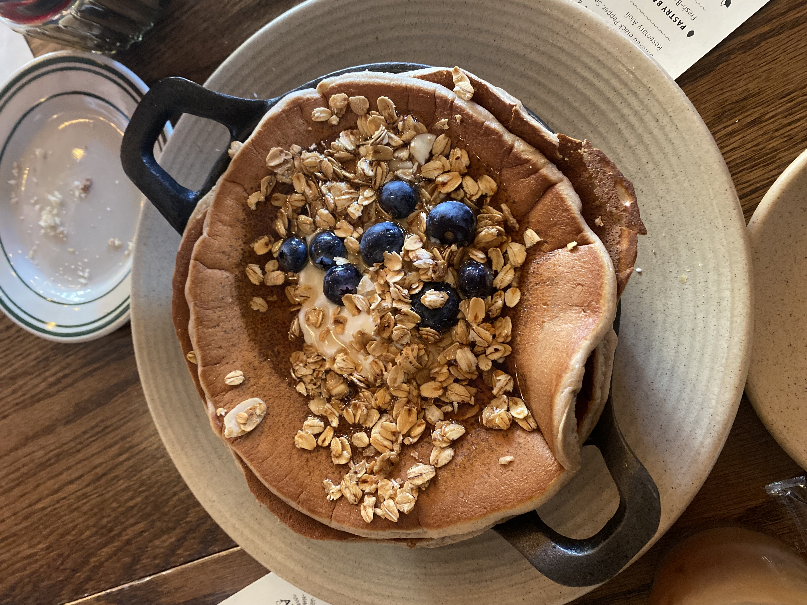
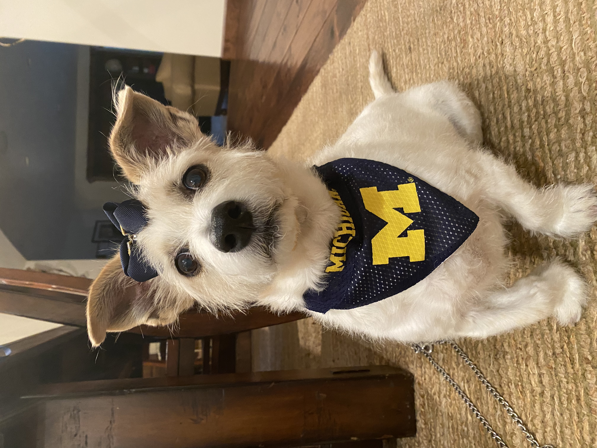
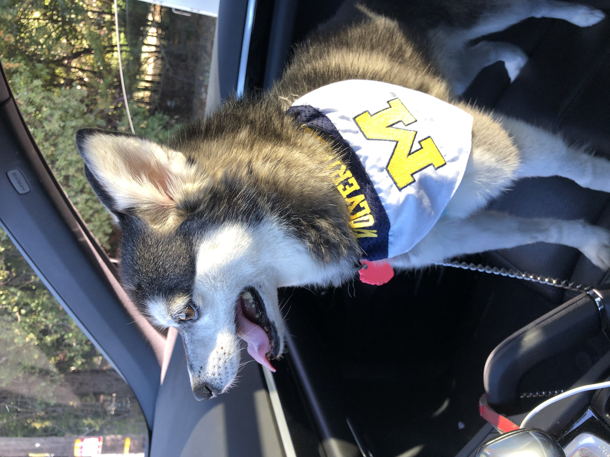
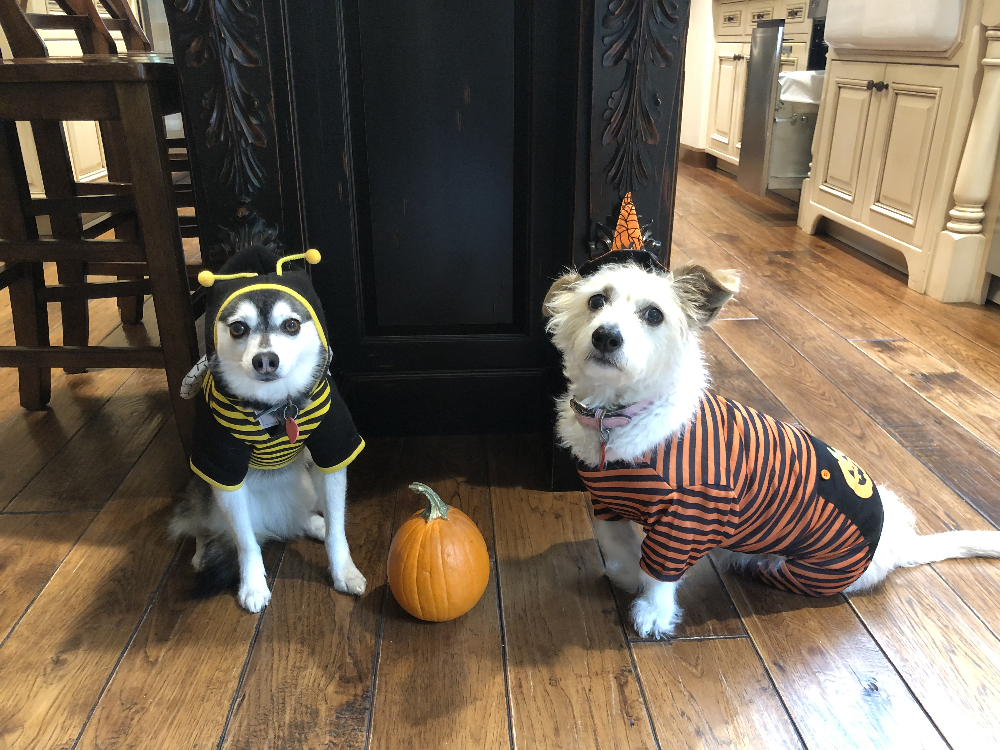
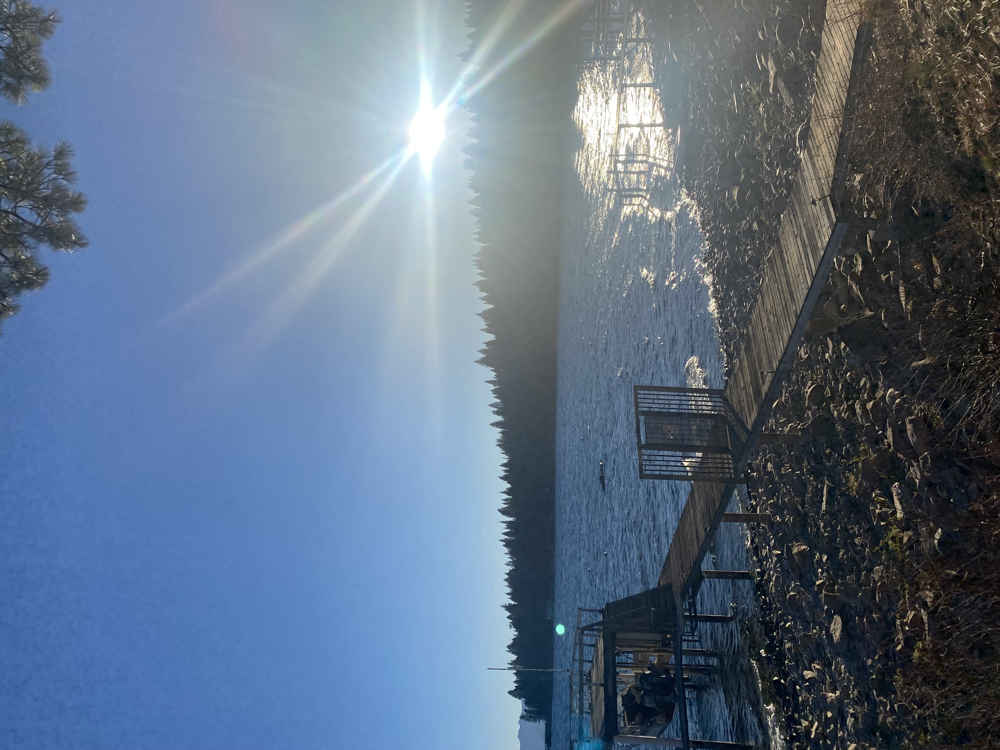
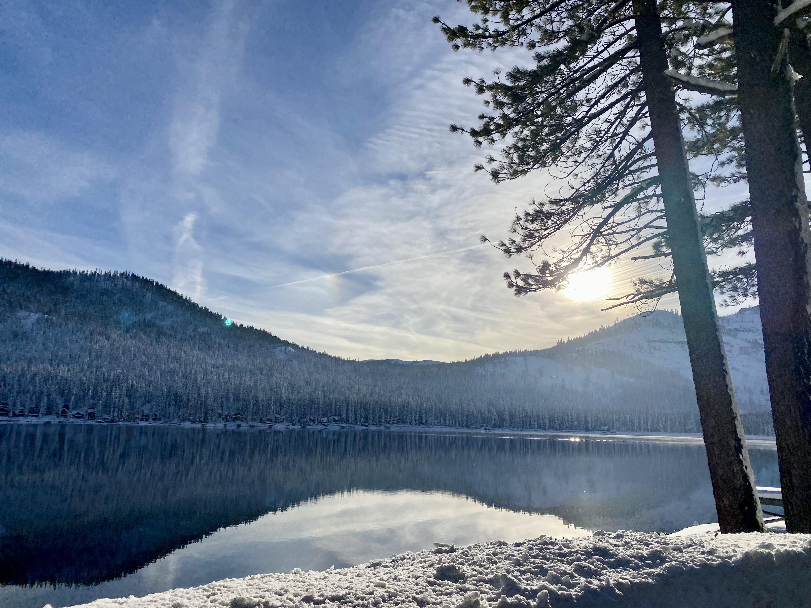
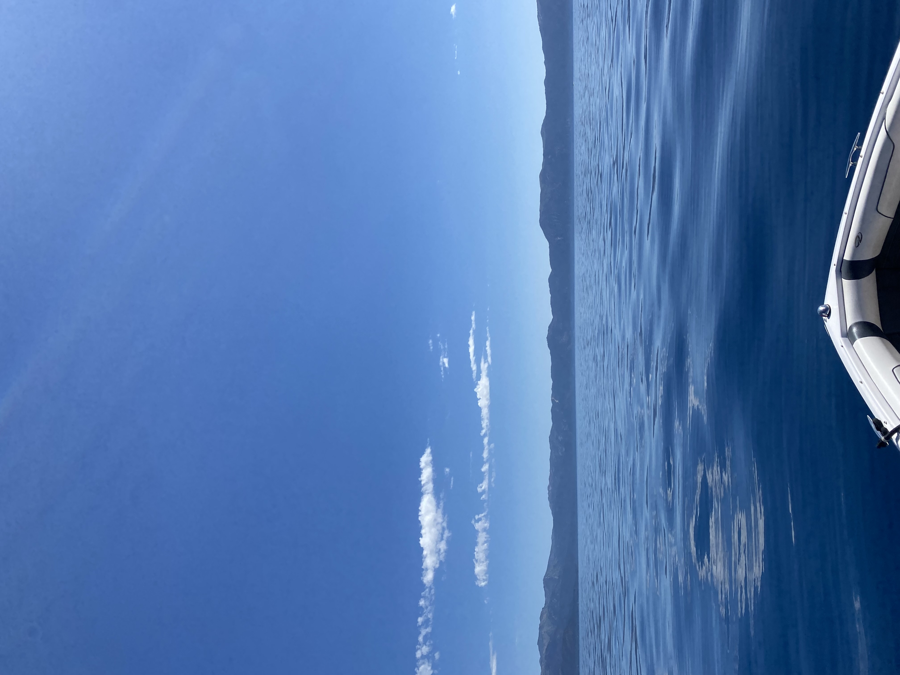

Hi, I'm Sydney.
Let's get to know each other! Some facts about me ...
- I am from the San Francisco Bay Area.
- I LOVE breakfast foods - those are blueberry lemon ricotta pancakes from my favorite brunch place Avalon in Ann Arbor!
- My dogs are my favorite thing in the world. Chloe is the Jack Russell Terrier and Nika is the miniature Husky. They are both huge Michigan fans and love Halloween.
- My favorite place is Lake Tahoe. My friends and I like to ski there in the winter and take a boat out on the lake in the summer.







